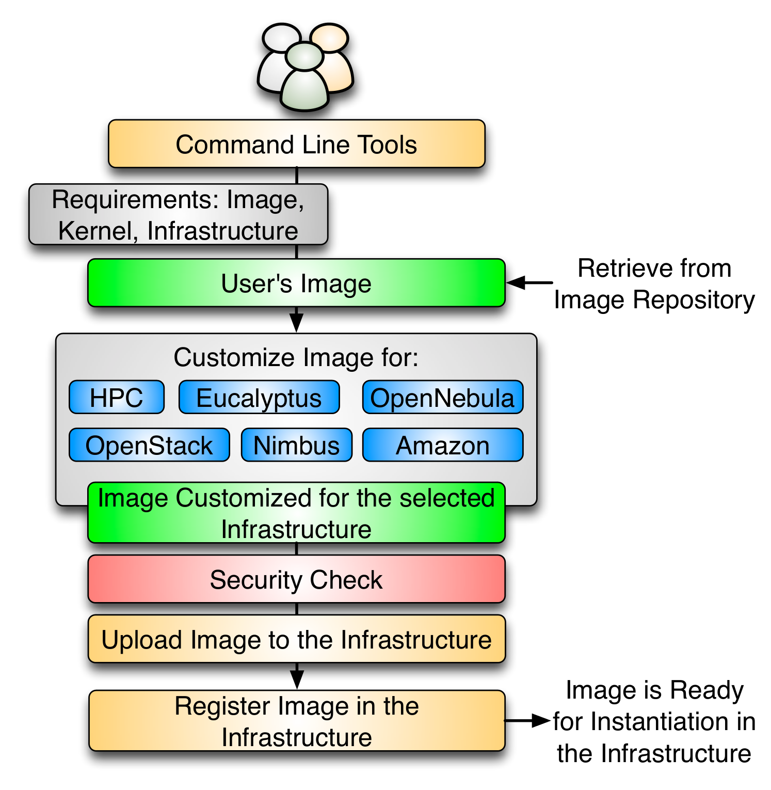

What is FutureGrid Rain?¶
Summary¶
FutureGrid Rain is a tool that will allow users to place customized environments like virtual clusters or IaaS frameworks onto resources. The process of raining goes beyond the services offered by existing scheduling tools due to its higher-level toolset targeting virtualized and non-virtualized resources. Rain will be able to move resources from one infrastructure to another and compare the execution of an experiment in the different supported infrastructures.
In order to support Rain we need a flexible Image Management framework. Thus, Rain includes the FutureGrid Image Management framework which defines the full life cycle of the images in FutureGrid. It involves the process of creating, customizing, storing, sharing, and registering images for different FG environments. To this end, we have several components to support the different tasks involved. First, we have an Image Generation tool that creates and customizes images according to user requirements. The second component is the Image Repository, which is in charge of storing, cataloging and sharing images. The last component is an Image Registration tool, which prepares, uploads and registers images for specific environments, like HPC or cloud frameworks. It also decides if an image is secure enough to be registered or if it needs additional security tests.
Image Management provides the low-level software needed to achieve Dynamic Provisioning and Rain. Dynamic Provisioning is in charge of allocating machines with the requested image. The requested image must have been previously registered in the infrastructure. On the other hand, Rain will be our highest level component that will use Dynamic Provisioning and Image Management to provide custom environments that may or may not exist. Therefore, a Rain request may involve the creation, registration, and provision of one or more images in a set of machines.
Rain¶
Due to the variety of services and limited resources provided in FG, it is necessary to enable a mechanism to provision needed services onto resources. This includes also the assignment of resources to different IaaS or PaaS frameworks.
Rain makes it possible to compare the benefits of IaaS, PaaS performance issues, as well as evaluating which applications can benefit from such environments and how they must be efficiently configured. As part of this process, we allow the generation of abstract images and universal image registration with the various infrastructures including Nimbus, Eucalyptus, OpenNebula, OpenStack, but also bare-metal via the HPC services.
It is one of the unique features about FutureGrid to provide an essential component to make comparisons between the different infrastructures more easily possible. Rain will offers four main features:
- Create customized environments on demand.
- Compare different infrastructures.
- Move resources from one infrastructure to another by changing the image they are running plus doing needed changes in the framework.
- Ease the system administrator burden for creating deployable images.
Image Management¶
Image management is a key component in any modern compute infrastructure, regardless if used for virtualized or non-virtualized resources. We distinguish a number of important processes that are integral part of the life-cycle management of images. They include (a) image creation and customization, (b) sharing the images via a repository, (c) registering the image into the infrastructure, and (d) image instantiation. The problem of targeting not one, but multiple infrastructures amplifies the need for tools supporting these processes. Without them, only the most experienced users will be able to manage them under great investment of time.

Figure: End to end image management
Image Generation¶
The image generation provides the first step in our image management process allowing users to create images according to their specifications. Since FG is a testbed that support different type of infrastructures like HPC or IaaS, the images created by this tool are not aimed to any specific environment. Thus, it is at the registration time when the images are customized to be successfully integrated into the desired infrastructure. This clear separation between image generation and registration provides a powerful model that allow us to independently increase the OS and infrastructures supported, respectively. Moreover, it reduces the amount of images that we need to manage in the image repository and therefore the disk usage.
The flowchart depicted in the next figure shows the process followed to create an image.

Figure: Image Generation
Users initiate the process by specifying their requirements. These requirements can include the selection of the OS type, version, architecture, software, services, and more. First, the image generation tool searches into the image repository to identify a base image to be cloned, and if there is no good candidate, the base image is created from scratch. Once we have a base image, the image generation tool installs the software required by the user. This software must be in the official OS repositories or in the FG software repository. The later contains software developed by the FG team or other approved software. The installation procedure can be aided by Chef, a configuration management tool to ensure the software is installed and configured properly. After updating the image, it is stored in the image repository and becomes available for registration into one of the supported infrastructures. Our tool is general to deal with installation particularities of different operating systems and architectures.
Image Repository¶
The image repository catalogs and stores images in a unified repository. It offers a common interface for distinguishing image types for different IaaS frameworks but also bare-metal images. This allows us to include a diverse set of images contributed not only by the FG development team but also by the user community that generates such images and wishes to share them. The images are augmented with information about the software stack installed on them including versions, libraries, and available services. This information is maintained in the catalog and can be searched by users and/or other FG services. Users looking for a specific image can discover available images fitting their needs using the catalog interface.
The information associated to the images is stored using the fields collected in the next table.
Field Name Type Valid Values Description Access imgId String Unique identifier Read-Only owner String Image’s owner Read-Only os String Operating system Read-Write arch String Architecture of the Image Read-Write description String Description of the image Read-Write tag String list Image’s keywords Read-Write vmType String none, xen, kvm, virtualbox, vmware Virtual machine type imgType String machine, kernel, eucalyptus, nimbus, opennebula, openstack Aim of the image Read-Write permission String public, private Access permission to the image Read-Write imgStatus String available, locked Status of the image Read-Write createdDate Date Upload date Read-Only lastAccess Date Last time the image was accessed Read-Only accessCount Long # times the image has been accessed Read-Only size Long Size of the image Read-Only
Image Registration¶
Once the image has been created and stored into the repository, we need to register it into the targeted infrastructure before we can instantiate it. Users requirements are simply the image, the targeted infrastructure and the kernel. The kernel is an optional requirement that allows advance users to select the most appropriate kernel for their experiments. This tool provides a list of available kernels organized by infrastructure. Nevertheless, users may request support for other kernels like one customized by them. Registering an image also includes the process of adapting it for the infrastructure. Often we find differences between them requiring us to provide further customizations, security check, the upload of the image to the infrastructure repository, and registering it. The process of adaptation and registration is depicted in Figure 4 in more detail. These customizations include the configuration of network IP, DNS, file system table, and kernel modules. Additional configuration is performed depending on the targeted deployed infrastructure.
In the HPC infrastructure the images are converted to network bootable images to be provisioned on bare-metal machines. Here, the customization process configures the image, so it can be integrated into the pool of deployable images accessible by the scheduler. In our case this is Moab. Hence, if such an image is specified as part of the job description the scheduler will conduct the provisioning of the image for us. These images are stateless and the system is restored by reverting to a default OS once the running job requiring a customized image is completed.
Images targeted for cloud infrastructures need to be converted into VM disks. These images also need some additional configuration to enable VM’s contextualization in the selected cloud. Our plan is to support the main IaaS clouds, namely Eucalyptus, Nimbus, OpenStack, OpenNebula, and Amazon Web Service (AWS). As our tool is extensible, we can also support other cloud frameworks.